15:00
하카타 공항 도착
15:00 - 16:30
입국 수속
16:30 - 17:00
숙소 boxi hakata1
체크인 / 짐보관
- 한글 주소: 일본 후쿠오카현 후쿠오카시 하카타구 미노시마 1-13-11-1
- 원문 주소: 〒812-0017 福岡県福岡市博多区美野島１丁目１３−１１−１
- 구글 맵 : https://maps.app.goo.gl/ZP2r8FVQWeq7o5YT8
17:00 - 17:30
하카타역 이동
17:30 - 18:30
이쿠라 하카타점
함바그 오므라이스
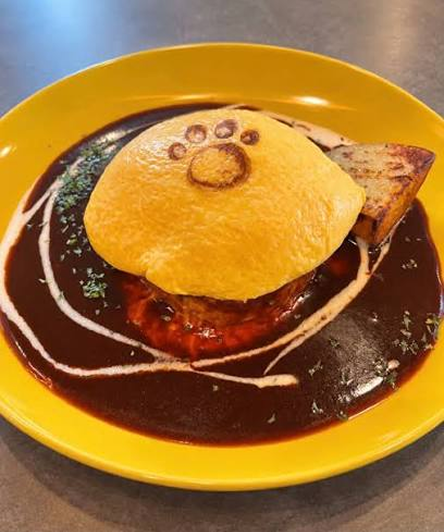
18:30 - 20:00
캐널시티 분수쇼 / 쇼핑
20:00 - 20:40
JR 하카타역 광장
크리스마스 마켓 구경
20:40 - 21:00
숙소로 이동
21:00 - 23:30
씻기 / 숙소 앞 편의점 털기
23:30 ~
취침
6:30 - 7:00
하카타역 신선산도
오픈런 이동
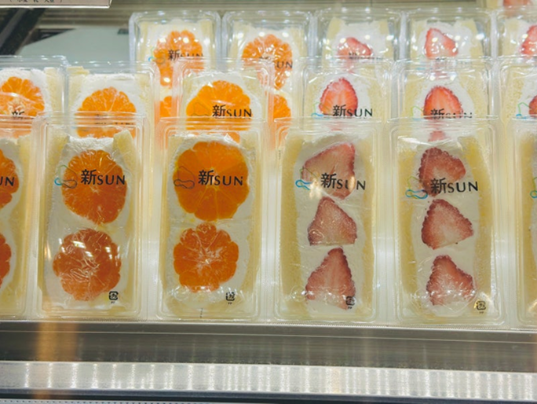
7:00 - 8:00
~오픈 기다리는 시간~
8:00 - 8:30
과일 산도 구매 후
다시 숙소로
8:30 - 10:30
다시 취침
10:30
기상
10:30 - 12:00
씻기 / 나갈준비
12:00 - 12:40
로피아 나가하마점
(대형 해산물 마트) 이동
12:40 - 13:00
마트 구경 / 스시 구매
13:00 - 13:30
Jacques(디저트 부띠끄)
케이크 구매
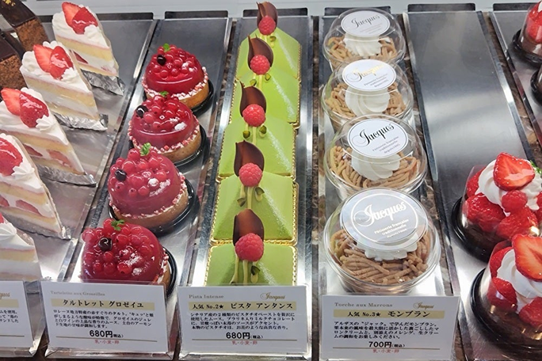
13:30 - 16:00
오호리 공원
공원 벤치에 앉아서 스시, 케이크 먹기
/ 가만히 앉아서 멍때리고 오리배 구경하기
/ 산책로 걷기
/ 오호리 공원역 지하철 사진관 ‘키레이’ 찍기
16:00 - 16:30
모모치 해변 이동
16:30 - 17:30
모모치 해변
17:30 - 18:10
나카스로 이동
18:10 - 19:30
시오 모츠나베 센도
레몬을 곁들인 소금
모츠나베 식사
19:30 - 20:30
나카스 히카리 노 어드벤트
일루미네이션 구경
20:30 - 21:00
나카스 강변 벤치에서
편의점 오뎅, 캠맥 먹기
21:00 - 21:30
숙소 이동
21:30 - 23:00
씻기 / 누워 쉬기
23:00 ~
취침
7:30
기상
7:30 - 9:00
씻기 / 나갈 준비
9:00 - 9:30
하카타역 이동
9:30 - 10:00
죠스이안 모찌 구매
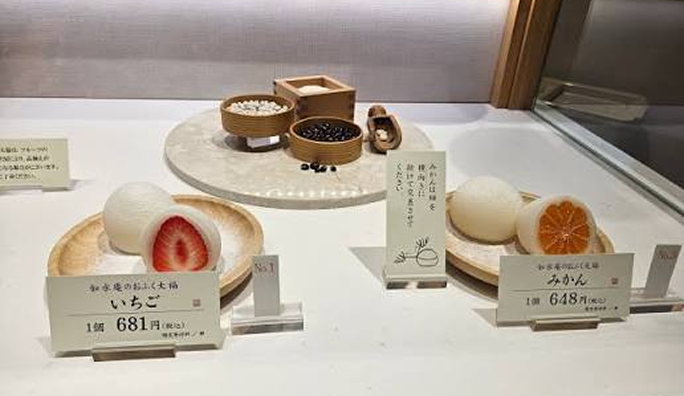
10:00 - 11:30
기타큐슈 모지코역 이동
11:30 - 12:00
모지코역 구경
12:00 - 13:30
모지코 레트로
/ 가이쿄 플라자 구경

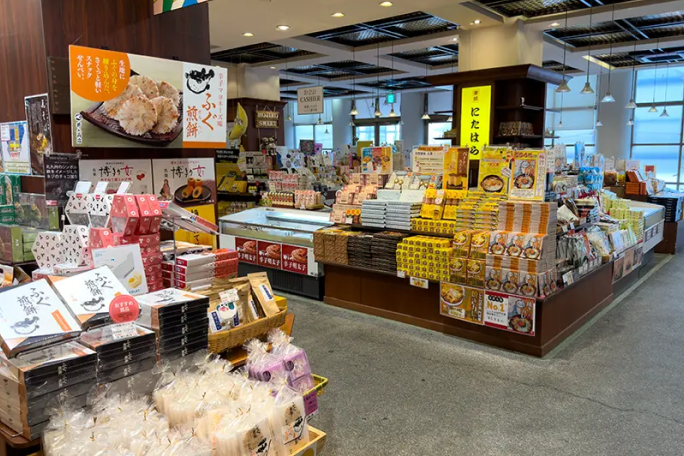
13:30 - 14:30
프린세스 피피
/ 야끼카레 식사
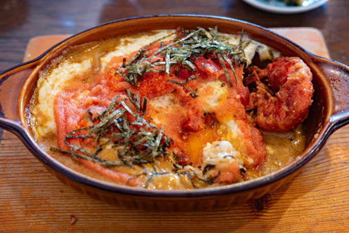
14:30 - 15:00
기타큐슈 고쿠라역 이동
15:00 - 16:30
고쿠라성 정원 산책
/ Mooon in riverwalk
후르츠 산도
16:30 - 18:00
아루아루시티
(애니메이션 굿즈,
피규어)
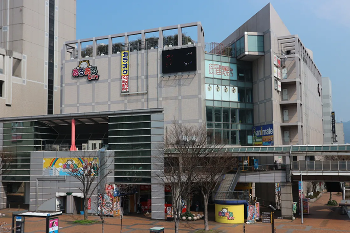
18:00 - 18:30
모지코역으로 이동
18:30 - 20:00
하카타역 도착
20:00 - 20:30
신신라멘 하카타역점
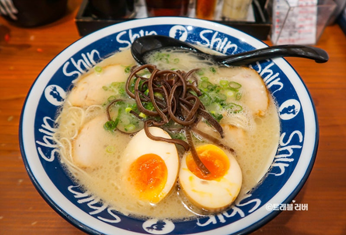
20:30 - 21:00
메이지공원 산책
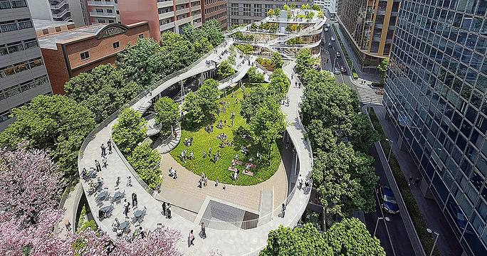
21:00 - 21:30
숙소로 이동
21:30 - 23:00
씻기 / 누워자기
23:00 ~
취침
10:00
기상
10:00 - 11:30
씻기 / 나갈 준비
11:30 - 12:00
텐진 파르코 백화점 이동
12:00 - 13:30
키와미야 함바그
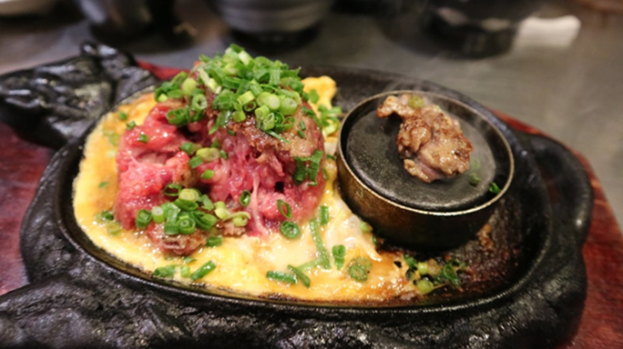
13:30 - 14:00
준쿠도 서점 구경
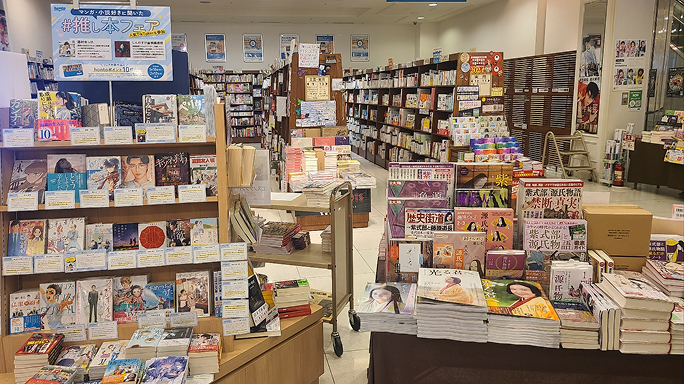
14:00 - 15:00
텐진 지하상가 구경
이모야 킨지로 / 링고 애플파이 / 칼디
15:00 - 16:30
J A B 카페
16:30 - 18:00
LP샵 구경
Face records / Borderline record
/ Catfish records / Groovin’
18:00 - 19:30
이토시마 쇼쿠도
카이센동
19:30 - 20:00
텐진시청 크리스마스 마켓
20:00 - 20:30
와타나베도리
일루미네이션 산책
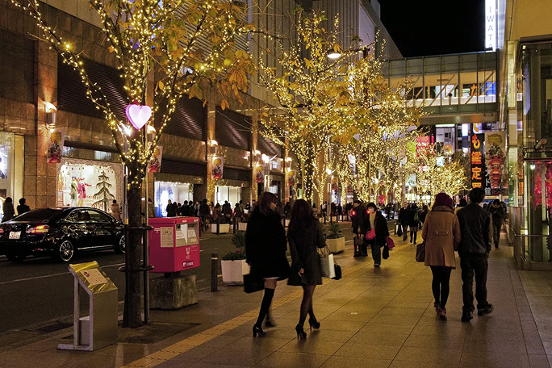
20:30 - 22:00
재즈앤카페 백스테이지
재즈공연 관람
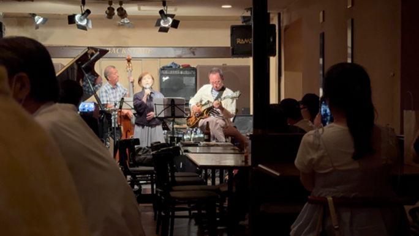
22:00 - 22:30
숙소로 이동
22:30 - 00:00
씻기 / 짐싸기
편의점 털어서 먹기
00:00 ~
취침
5:20
기상
5:20 - 5:40
양치 세수
짐 확인 후 체크아웃
5:40 - 6:10
하카타 공항 도착
비행기 체크인
8:55 - 10:00
하카타 공항에서 출발
10:00
부산 도착